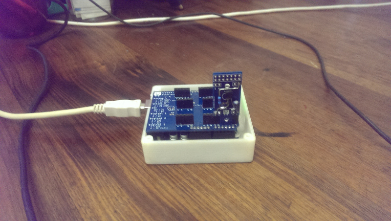
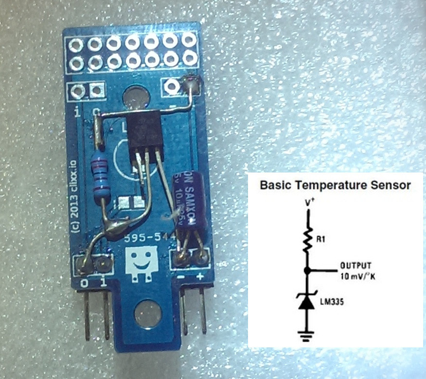
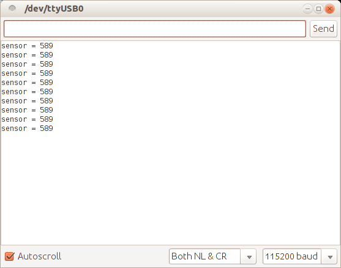
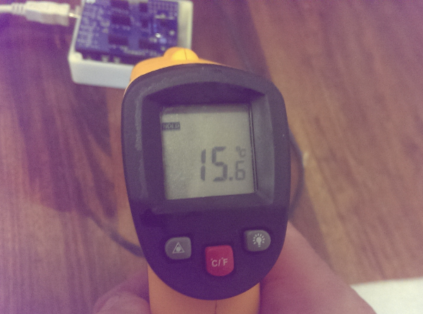

Example Projects
Potentiometer for Arduino
For anybody learning or wishing to make their own electronics devices, it's very hard to make a collection of projects without having a project that needs a Potentiometer, or in plain English, a Dial.
It's not so difficult to hook up a potentiometer to an Arduino, and there are plenty of tutorials to do that on the net
One major benefit that clixx.io provides is that with this system the pieces just plug in and are available for almost instant use.
Shown on the Arduino is the clixx.io Dock. It's basically an Arduino shield with most of the common configurations broken out into a more useable arrangement. The rightmost connector where the temperature sensor board is plugged in directly corresponds to Analog-Pin-1. The Potentiomer simply connects in to where the Analag-1 Pin is.
The circuit that I found on the Internet was pretty basic. Just a pullup resistor to VCC. Although the circuit doesn't show it, when I was testing I found that the output signal wasn't stable so I added a 10uF decoupling capacitor to the power pins and that worked incredibly well to stabilise the output.
What is particularly good about the LM335A is that it outputs a predictable analog signal which is ideal for picking up from an Arduino or any other microprocessor with an analog port.
Inside the Arduino examples there is a very handy script called AnalogToSerial.ino. It's very handy for downloading to the Arduino to see the Analog value on the Serial Port. I did some slight modifications to remove the translation so that it outputs only the exact ADC value that it finds on the port.
Here's the code:
void loop() {
// read the analog in value:
sensorValue = analogRead(analogInPin);
// change the analog out value:
analogWrite(analogOutPin, outputValue);
// print the results to the serial monitor:
if (sensorValue !=0){
Serial.print("sensor = " );
Serial.println(sensorValue);
digitalWrite(13,HIGH);
}
// wait 2 milliseconds before the next loop
// for the analog-to-digital converter to settle
// after the last reading:
delay(2000);
digitalWrite(13,LOW);
}
Once the program is compiled and running, the sensor outputs an analog value (a voltage) which is read by the ADC and sent to the PC. The built-in terminal software inside the Arduino IDE then prints these values.
Of course, we don't have our values in Degree's yet so we need to do a conversion.
Whilst sometimes it might seem that clixx.io is some type of proprietary system it's actually not. It's very easy to go on the internet, find a sketch, download it and run on standard Arduino hardware through the standard Arduino IDE.
The Arduino Forum has a great post Library for LM335A Temperature Sensor and I downloaded that. Here is a snippet of the program where the majority of the work is done:
LM335A InsideTemp(0); //pass the analog input pin number
void setup() {
Serial.begin(115200);
Serial.println("starting");
}
void loop() {
delay(3000);
//user must call ReadTemp before any valid temp data is available
InsideTemp.ReadTemp();
Serial.print("Fahrenheit: ");
//functions to get the temperature in various unitsfs
Serial.println(InsideTemp.Fahrenheit());
Serial.print("Celsius: ");
Serial.println(InsideTemp.Celsius());
Serial.print("Kelvin: ");
Serial.println(InsideTemp.Kelvin());
}
After compiling and uploading that, I get the following on my debug window:

It seemed to work pretty well. I measured the temperature using a handheld thermometer and the results seemed to match to within error tolerances.
